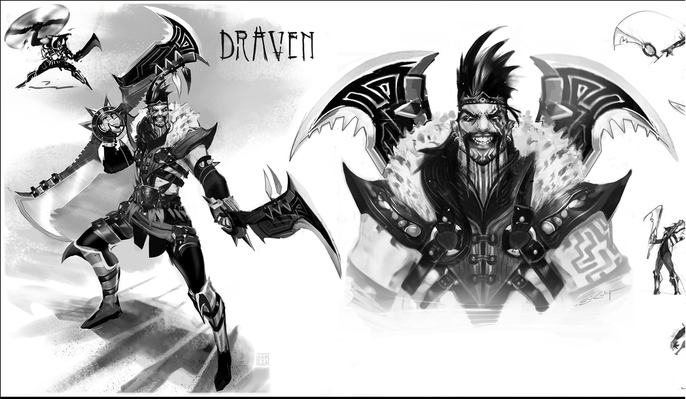

Bienvenidos a League Of Draven
En Noxus, algunos guerreros se enfrentan unos a otros en arenas donde la sangre corre y la fuerza se pone a prueba, pero nadie ha sido tan celebrado como Draven. Este antiguo soldado encontró que el público apreciaba en realidad su habilidad para lo dramático, sin mencionar los chorros de sangre que emergían de cada una de sus hachas giratorias. Adicto al espectáculo de su propia perfección descarada, Draven juró vencer a quien sea necesario para asegurar que su nombre se cante por todo el imperio durante toda la eternidad.
Skins

Draven Gladiador

Draven Reinos Mecha

Draven Horario Estelar

Draven Saqueador De Almas
Draven Veraniego

Draven Cazador De Bestias

Draven Draven
''La excelencia está allá donde yo decida poner el listón cada día''.
